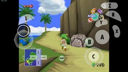
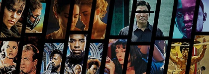

Jeric T. Mangundayao
Although I only how to play chords, I still enjoy playing guitar and learning new chords by learning new songs. I sometimes jam with my friends or cousins.
I've been drawing ever since I knew how to hold pencil. My notebooks sometimes only have 1 page of lesson written and the rest of it are drawings, scribbles, sketches, or doodles. Now that Im having my own money, I bought a pen tablet and currently learning to create digital arts but my netbook is just not powerul enough to handle softwares needed such as photoshop and krita. I also now accept commisions for graphite portraits and basic logo edits, press the contact button to know how to find me.
I play games from gameboy, gba, psp, and also games from other consoles using emulators. I enjoy role playing games with stories behind them like pokemon, gta, and legend of zelda. Now that fps games and mmorpg are so famous, im not playing as often on those genre for im not that competitive. DOTA and mobile Legends are the only games I play on mmorpg.
I love watching movies. action, scifi, and movies with moral lessons are my favorite ones. I also watch anime since grade schools until now.